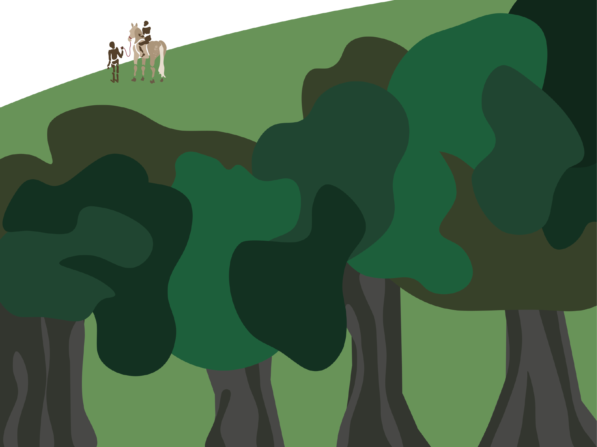

Te drzewa, stoją tu od setek lat, widzą wszystko. Wszystkie nasze ludzkie wydarzenia są dla nich nieważną sekundą, mają ważniejsze rzeczy na głowie. Po naszej śmierci będą jeszcze długo tu stać. Z tego punktu widzenia jesteśmy jak pająki w trawie.